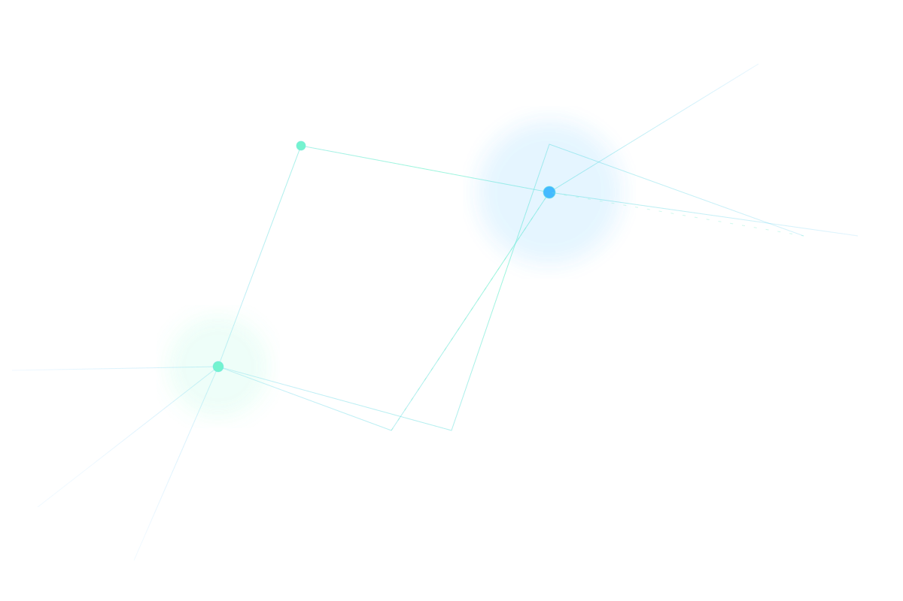

Strategic clarity
Turn complex signals into deliberate priorities.

Axodus aligns strategy, technology and execution into an institutional operating advantage.
Use cards only for discrete, equal-weight choices or outcomes.
Turn complex signals into deliberate priorities.
Design institutions that compound momentum.
Build delivery systems that preserve quality.